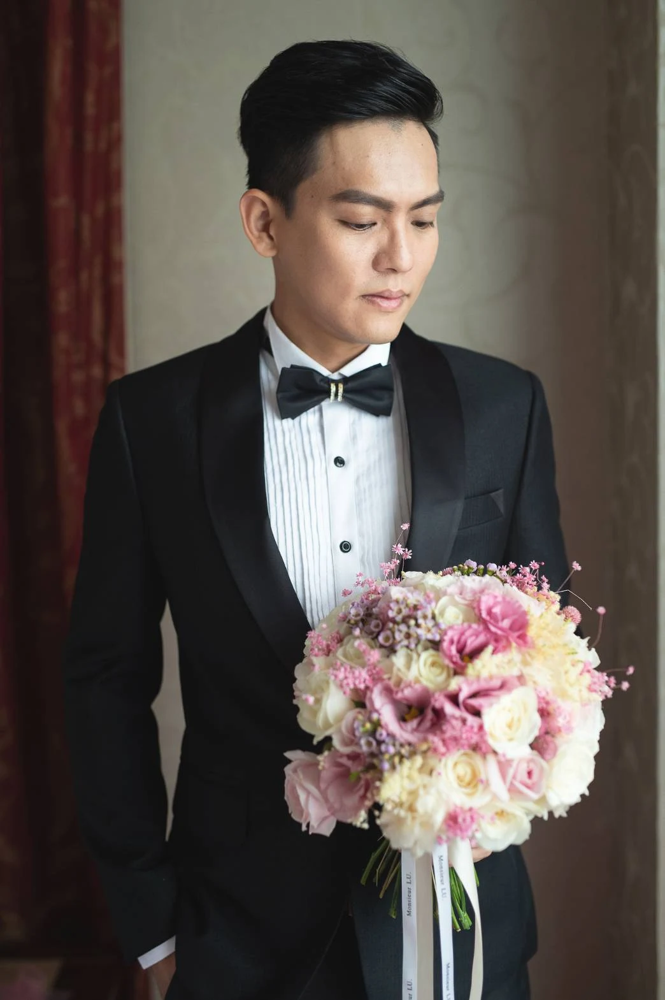

詢問此類款式 ↗
詢問此類款式 ↗PERSONAL 01
淺灰西服
輕盈色調與俐落輪廓的穿著參考。
THE MAGGIO COLLECTION
從個人風格到團隊形象，
在既有作品中，找到你的下一個靈感。
詢問此類款式 ↗PERSONAL 01
輕盈色調與俐落輪廓的穿著參考。
 詢問此類款式 ↗
詢問此類款式 ↗PERSONAL 02
適合正式場合的穩重色系。

詢問此類款式 ↗PERSONAL 03
以領結與細節搭配，回應重要時刻。
 詢問此類款式 ↗
詢問此類款式 ↗OUTERWEAR 01
中華電信男女外套歷年款式展示。
 詢問此類款式 ↗
詢問此類款式 ↗OUTERWEAR 02
防水透濕多功能風衣款式展示。
 詢問此類款式 ↗
詢問此類款式 ↗OUTERWEAR 03
彰銀外套與保暖內搭歷年款式展示。
本頁為歷年作品與款式紀錄，不代表目前供貨或現行合作狀態；各款式細節以洽詢確認為準。
LET’S MAKE IT YOURS
告訴我們你的需求，一起找到合適的款式與製作方向。